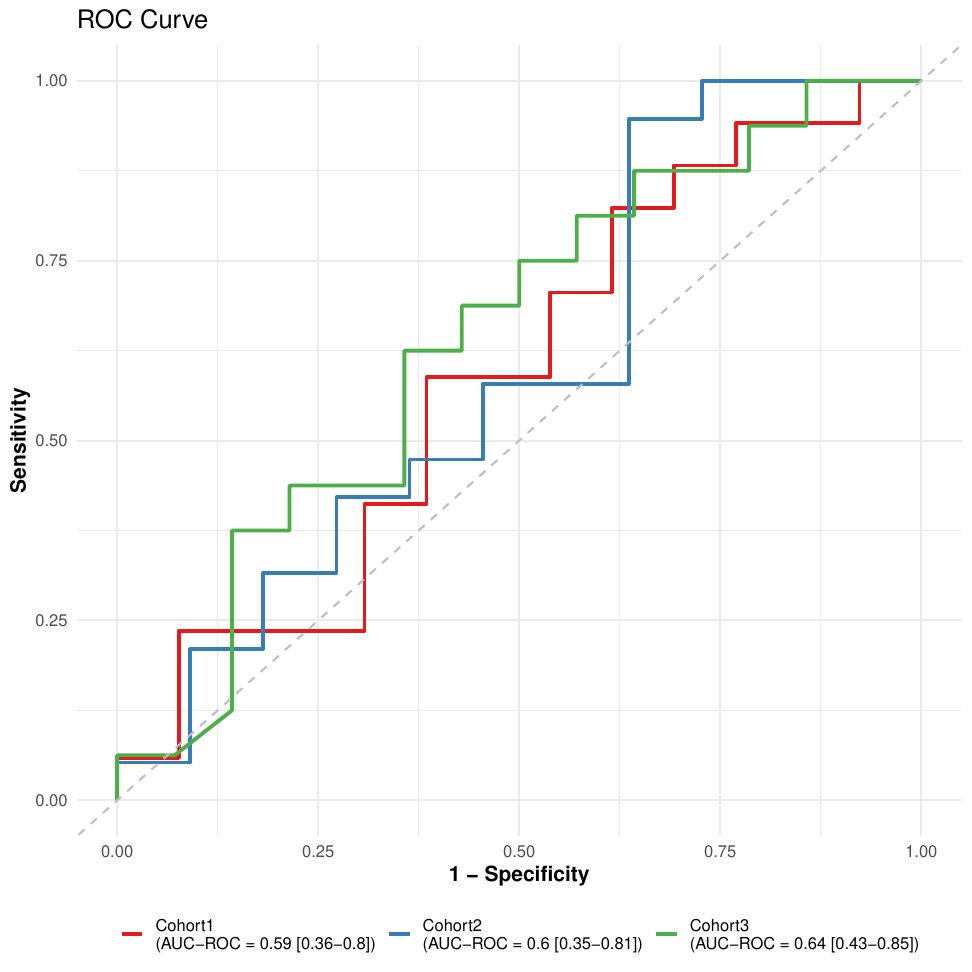
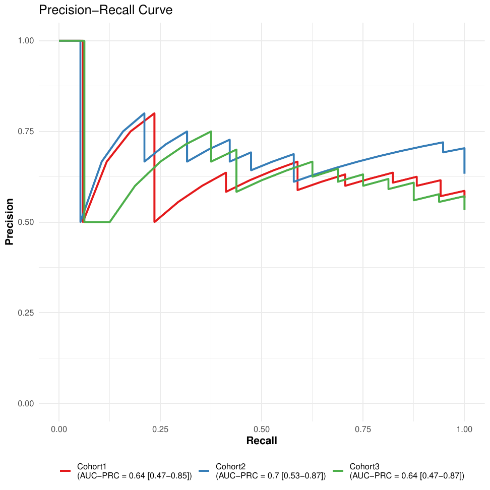

Multi-cohort validation (LODO)
a4_lodo.Rmd
library(pipeML)
library(dplyr)
#>
#> Attaching package: 'dplyr'
#> The following objects are masked from 'package:stats':
#>
#> filter, lag
#> The following objects are masked from 'package:base':
#>
#> intersect, setdiff, setequal, unionLeave-One-Dataset-Out analysis
When samples come from several cohorts, a model should be evaluated on a cohort it has never seen. In a Leave-One-Dataset-Out (LODO) analysis, each cohort is left out in turn: the models are trained on the other cohorts and tested on the left-out one.
Inside the training cohorts, set LODO = TRUE and give
the cohort of each sample in batch_var: the
cross-validation folds are then stratified by cohort and outcome, so
every fold contains samples of every training cohort in the same
proportions. The cohort is only used to build the folds; it is not used
as a predictor.
Classification
Simulate 90 samples from three cohorts, with 15 features:
set.seed(123)
traitData <- data.frame(
Sample = paste0("Sample", 1:90),
Response = sample(c("R", "NR"), 90, replace = TRUE),
Cohort = rep(paste0("Cohort", 1:3), each = 30)
)
rownames(traitData) <- traitData$Sample
features_all <- as.data.frame(matrix(runif(90 * 15), nrow = 90, ncol = 15))
rownames(features_all) <- traitData$Sample
colnames(features_all) <- paste0("Feature", 1:15)Leave each cohort out in turn:
prediction <- list()
for (cohort in unique(traitData$Cohort)) {
# Test cohort
traitData_test <- traitData %>% dplyr::filter(Cohort == cohort)
features_test <- features_all[rownames(traitData_test), ]
# Training cohorts
traitData_train <- traitData %>% dplyr::filter(Cohort != cohort)
features_train <- features_all[rownames(traitData_train), ]
# Training, with folds stratified by cohort
res_lodo <- compute_features.training.ML(features_train = features_train,
target_var = traitData_train$Response,
task_type = "classification",
trait.positive = "R",
metric = "AUROC",
k_folds = 3,
n_rep = 2,
LODO = TRUE,
batch_var = traitData_train$Cohort,
ncores = 2,
return = FALSE)
# Test on the left-out cohort
prediction[[cohort]] <- compute_prediction(model = res_lodo$Model,
test_data = features_test,
target_var = traitData_test$Response,
task_type = "classification",
trait.positive = "R",
return = FALSE)
}AUROC of each left-out cohort:
sapply(prediction, function(x) x$AUC$AUROC$estimate)get_curves() draws the ROC and precision-recall curves
of all cohorts together. Stack the metrics of each cohort, with the
cohort in a column, and give the AUROC and AUPRC of each cohort as named
vectors:
roc_data <- lapply(names(prediction), function(cohort) {
df <- prediction[[cohort]]$Metrics
df$cohort <- cohort
df
}) %>% dplyr::bind_rows()
auc_roc <- list(
estimate = sapply(prediction, function(x) x$AUC$AUROC$estimate),
lower = sapply(prediction, function(x) x$AUC$AUROC$lower),
upper = sapply(prediction, function(x) x$AUC$AUROC$upper)
)
auc_prc <- list(
estimate = sapply(prediction, function(x) x$AUC$AUPRC$estimate),
lower = sapply(prediction, function(x) x$AUC$AUPRC$lower),
upper = sapply(prediction, function(x) x$AUC$AUPRC$upper)
)
get_curves(data = roc_data,
color = "cohort",
auc_roc = auc_roc,
auc_prc = auc_prc,
LODO = TRUE,
file.name = "LODO_cohort_example",
width = 9,
height = 9)The plots are saved in Results/:

Figure 1. ROC curves of each left-out cohort.

Figure 2. Precision-recall curves of each left-out cohort.
Survival
The same loop works for survival tasks. The cross-validation folds are then stratified by cohort and event. Simulate survival times for the same samples:
set.seed(123)
traitData$time <- stats::rexp(90, rate = exp(features_all$Feature1 - 0.5) / 365)
traitData$event <- stats::rbinom(90, 1, 0.7)
c_index <- c()
for (cohort in unique(traitData$Cohort)) {
traitData_test <- traitData %>% dplyr::filter(Cohort == cohort)
traitData_train <- traitData %>% dplyr::filter(Cohort != cohort)
res_lodo_survival <- compute_features.training.ML(features_train = features_all[rownames(traitData_train), ],
task_type = "survival",
time_var = traitData_train$time,
event_var = traitData_train$event,
k_folds = 3,
n_rep = 1,
LODO = TRUE,
batch_var = traitData_train$Cohort,
ncores = 2)
pred <- compute_prediction(model = res_lodo_survival$Model,
test_data = features_all[rownames(traitData_test), ],
task_type = "survival",
time_var = traitData_test$time,
event_var = traitData_test$event)
c_index[cohort] <- pred$c_index
}
c_indexOne-step training and prediction
compute_features.ML() also accepts
LODO = TRUE. There, batch_id is the name of
the cohort column of coldata:
test_cohort <- "Cohort3"
train_samples <- rownames(traitData)[traitData$Cohort != test_cohort]
test_samples <- rownames(traitData)[traitData$Cohort == test_cohort]
res_onestep_lodo <- compute_features.ML(features_train = features_all[train_samples, ],
features_test = features_all[test_samples, ],
coldata = traitData,
task_type = "classification",
trait = "Response",
trait.positive = "R",
k_folds = 3,
n_rep = 2,
LODO = TRUE,
batch_id = "Cohort",
ncores = 2)
res_onestep_lodo$AUC$AUROC